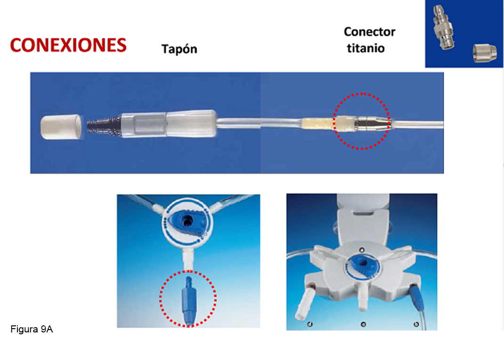
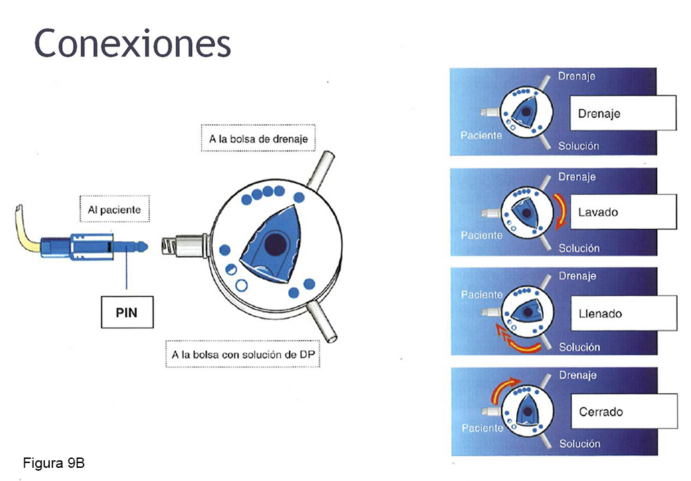

<div class="pages">
  <div data-page="projects" class="page no-toolbar no-navbar">
    <div class="page-content">
    
     <div class="navbarpages">
       <div class="navbar_home_link"><a href="toogle.html"></a></div>
       <div class="navbar_page_center"><b>Especialidades</b></div>
       <div class="menu_open_icon_white"><a href="#" class="open-panel"></a></div>
     </div>
     <div id="pages_maincontent">

          <h2 class="page_subtitle">Diálisis Peritoneal - Catéter Peritoneal</h2>
          <p><b>Autor/a:</b> Maite Rivera. Servicio de Nefrología (Anatomía), Víctor Burguera y Yael Coronas (Fisiología) - Hospital Ramón y Cajal, Madrid</p>
          <div class="page_single">         
              <div class="buttons-row">
                    <a href="#tab3" class="tab-link active button">Información</a>
                    <a href="#tab4" class="tab-link button">Tipos</a>
                    <a href="#tab5" class="tab-link button">Implantación</a>
                    <a href="#tab6" class="tab-link button">Retirada</a>
                    <a href="#tab7" class="tab-link button">Conexión</a>
              </div>
              
              <div class="tabs-simple">
                    <div class="tabs">
                        <div id="tab3" class="tab active">
                              <br />
                              <h4>Información</h4>
                              <p class="justify">
                                  Los catéteres de DP son un tubo cilíndrico de silicona (más frecuente) o poliuretano, con agujeros en su porción interna, con uno o dos manguitos de dacron destinados a permitir el crecimiento de tejido fibroso y, en consecuencia, fijar el catéter en su lugar y actuar de defensa contra las bacterias. <br />
    El catéter es opaco a los rayos X y se fabrican en varias longitudes (las más utilizadas en el adulto son de 42 y 47 cm). Tiene una porción externa, unida al prolongador  y una porción interna en la cavidad peritoneal. 
                              </p>
                      </div>
                      <div id="tab4" class="tab">
                              <br />
                              <h4>Tipos</h4>
                              <p class="justify">
                                  Existen varios tipos de catéteres. No está claramente demostrada la superioridad de alguno de ellos. <br />
                                  El más utilizado es el de Tenckhoff recto, que consiste en un tubo de silicona con dos manguitos de dacron o fieltro con un segmento intraperitoneal recto. Son variantes del catéter Tenckhoff tradicional, que acaba en su porción externa en cuello de cisne o en cola de cerdo en su porción interna. <br />
                                  Otros catéteres del mercado son: catéter de Missouri, catéter de Toronto-Western, catéter de Lifecath, catéter de poliuretano, catéter autoposicionable con punta de tungsteno de Di Paolo,  etc.
                              </p>
                      </div> 
                      <div id="tab5" class="tab">
                              <br />
                              <p class="justify">
                                  El catéter se implanta en la pared abdominal, a ambos lados de la línea media. El dacron interno se sitúa en el músculo recto anterior y el externo, en el túnel subcutáneo, a 2 cm del orificio de salida. Hay evidencia de que la salida del catéter por la piel en dirección caudal disminuye la probabilidad de infección del orificio.<br />
                                  Existen  dos formas de implantar el catéter: a ciegas (percutáneo con trócar pelable y  minilaparotomía con trócar metálico de Tenckhoff) o laparoscópica, con visión directa del peritoneo.<br />
                                  Las dos primeras suelen hacerse con anestesia local por el nefrólogo o el cirujano. La implantación laparoscópica se realiza bajo anestesia general y por el cirujano.<br /><br />
                                
                                
                                <b>Protocolo preimplantación</b><br /><br />
                                
                                -	Revisar la pared abdominal (hernias, eventración, etc.). Corregir si es posible antes o durante la implantación (si se hace en quirófano)<br />
                                -	Conocer la condición de portador nasal para S. aureus y tratar, si es posible, antes de la implantación para intentar erradicarlo (con mupirocina nasal)<br />
                                -	Determinar el orificio de salida, evitando la localización de la cintura del pantalón o falda para evitar el roce y traumatismo<br />
                                -	Solicitar preoperatorio y reservar sangre en banco<br />
                                -	Solicitar ingreso<br />
                                -	Preparar la piel la mañana preimplantación (ducha). Rasurar abdomen en hombres.<br />
                                -	Revisar preoperatorio (analítica con hemostasia, hemograma y bioquímica)<br />
                                -	Preparar el intestino: enema de limpieza la noche anterior y la mañana de la implantación del catéter.<br />
                                -	Antibióticos profilácticos: Cefalosporina de 1º generación IV (Cefazolina). Evitar Vancomicina (favorece aparición de microorganismos resistentes, ej. Enterococo o S. aureus). En alérgicos a cefalosporinas  dar ciprofloxacino (200 mg, IV) o Gentamicina IV (1,5 mg/Kg de peso).<br />
                                -	Justo antes de la implantación solicitar al paciente que vacíe la vejiga (para evitar su perforación). En prostáticos o diabéticos el vaciado espontáneo de la vejiga puede ser incompleto (residuo postmiccional). Comprobar el vaciado de vejiga con exploración física o con ecografía.<br /><br />
                                
                                
                                <b>Protocolo postimplantación</b><br /><br />
                                
                                -	Poner crema de mupirocina o gentamicina sobre orificio al acabar, según estado de portador nasal.<br />
                                -	Poner vendaje compresivo y no levantarlo en al menos 1 semana, salvo incidencias.<br />
                                -	Revisiones semanales en la Unidad de DP. Evitar manipulación del vendaje por personal no entrenado en DP para que no se movilice el catéter, siempre bajo medidas de asepsia (mascarilla, guantes, etc.).<br /><br />
                                
                                
                                <b>Inicio de DP tras implantación del catéter</b><br />
                                
                                -	Inicio programado: tras período de maduración (3-4 semanas)<br />
                                -	Inicio no programado: inmediatamente tras la implantación, en decúbito, con bajos volúmenes  por intercambio (500-700 ml)

                              </p>
                      </div> 
                       <div id="tab6" class="tab">
                              <br />
                              <p class="justify">
                                  Las indicaciones para la retirada del catéter peritoneal son:<br /><br />

                                    -	Peritonitis refractaria<br />
                                    -	Peritonitis fúngica<br />
                                    -	Peritonitis por micobacterias<br />
                                    -	Infección del orificio de salida y del túnel refractaria a tratamiento antibiótico<br />
                                    -	Catéter malposicionado no recolocable con maniobra alfa ni laparoscopia<br />
                                    -	Trasplante renal funcionante<br />
                                    -	Recuperación de la FRR

                              </p>
                      </div> 
                       <div id="tab7" class="tab">
                              <br />
                              <p class="justify">
                                  Al catéter de DP se adapta un prolongador (línea de transferencia) mediante una conexión de titanio o de plástico. El prolongador facilita el procedimiento de diálisis, ya que alarga el extremo exterior del catéter y evita el deterioro del mismo puesto que lo que se conecta a la bolsa es el prolongador. Mientras no se esté realizando un intercambio se cierra con un tapón específico para cada casa comercial <b>(Figura 9A)</b>.  Fresenius® ofrece además un sistema de disco <b>(Figura 9B)</b>.<br /><br />
                                  <br />
                                  
                              </p>
                      </div> 
              </div>        
          </div>     
      </div>  
    </div>
  </div>
</div>